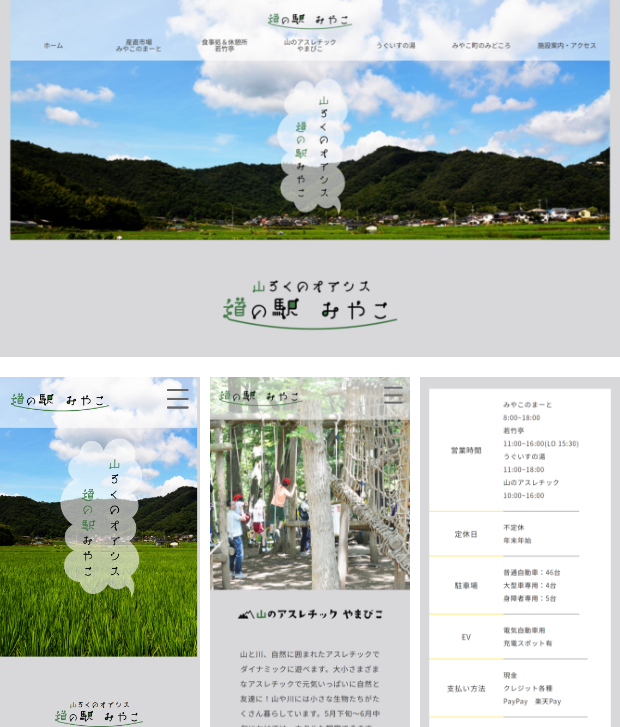
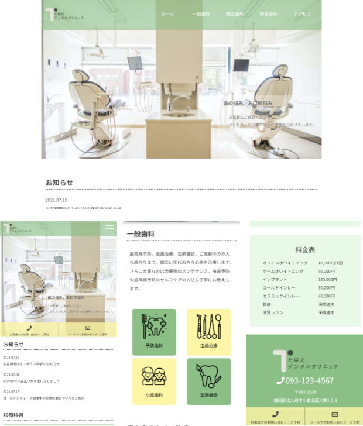
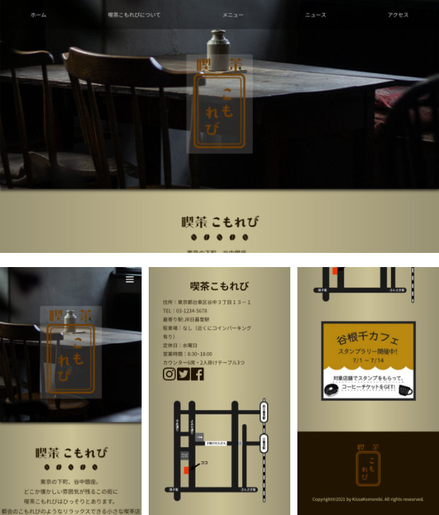
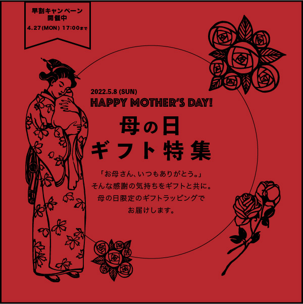
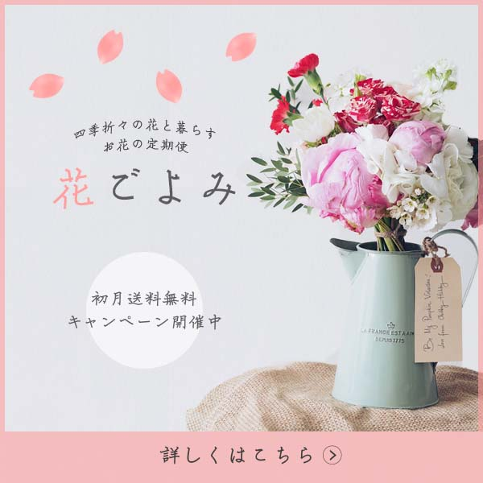
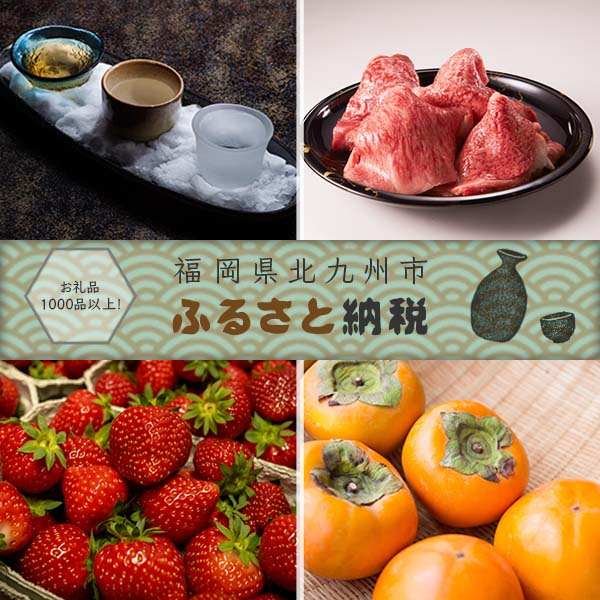
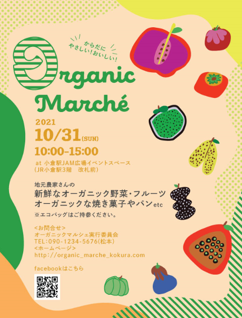
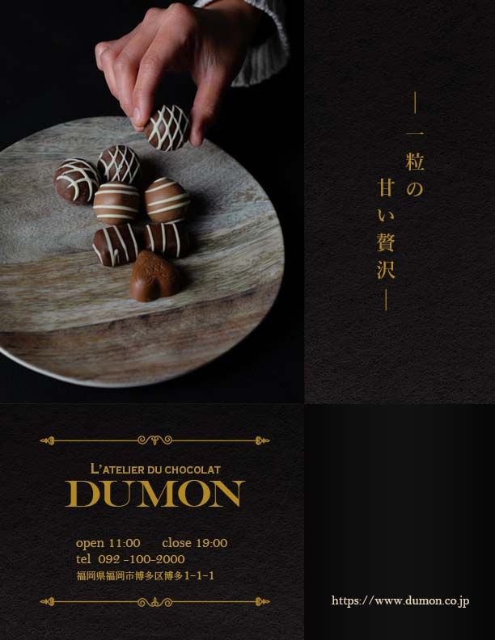

WORKS
サイト製作

架空サイト 道の駅みやこ
Illustrator/Photoshop/AdobeXD/
HTML/CSS/jQuery
レスポンシブ対応
- サイト制作目的
-
・道の駅自体の認知、どのような施設、サービスが利用できるかを知ってもらう。
・なるべくサイト内に道の駅の情報を細かく記載し、サイトを閲覧することで欲しい情報が把握できるようにする。（各店舗の営業時間、利用可能な支払方法など。）
・道の駅というと高齢層に人気の施設なため、若い世代にも親しみやすさを出す。 - ペルソナ
- 大阪在住33歳既婚女性。
家族構成は夫と子供３人。実家が北九州市小倉南区で帰省時に両親を含めた親子三世代でゆっくり楽しめる場所を探している。育児や仕事の隙間時間にスマホでいろいろ情報を探すことが多い。 - 苦労した点
- ペルソナを意識し、モバイルファーストで製作。レスポンシブでPC用に画面を広げた際に、サブページのコンテンツがただ横にならんでしまうだけになってしまい、サイトのわくわく感を減らしてしまった。そのため、画像とテキストを重ね、テキストにを背景色をつけ見た目に動きを出した。
- 製作範囲
- ワイヤーフレーム作成/モックアップ作成/ コーディング
- 製作期間
- 3週間

架空 歯科医院サイト
Illustrator/Photoshop/AdobeXD/
HTML/CSS/jQuery
レスポンシブ対応
- サイト制作目的
- ・サイトを訪問してもらい、サイト経由で電話もしくはメールで予約をしてほしい。
・歯医者が苦手な方にも来てもらいやすいように、やわらかい雰囲気と清潔感をサイトを通して伝えたい。 - ペルソナ
- 福岡県北九州市在住43歳独身男性。ずいぶんと歯科検診をしておらず、歯医者にいくことに少し恐怖感があり敬遠していた。たばこを吸うのでホワイトニングなどのお手入れもしたいと考えている。スマホからサクッと予約したい。
- 苦労した点
- ペルソナを意識し、モバイルファーストで製作した。スマホサイズの画面では、予約しやすいように電話とメールのボタンが画面下部に常ににあるように配置した。レスポンシブ対応した際に、診療案内のテーブルが崩れてしまった。教科書及びテーブルタグのレスポンシブ対応についての説明を調べ、解決した。
- 製作範囲
- ワイヤーフレーム作成/モックアップ作成/ コーディング
- 製作期間
- 2週間

架空サイト 喫茶こもれび
Illustrator/Photoshop/
HTML/CSS/jQuery
レスポンシブ対応
- サイト制作目的
- ・喫茶店とおすすめメニューの認知。
・サイトを通じて、喫茶店のゆったりと落ち着いた雰囲気を伝えたい。
・午前11時までとゆっくりとした時間までモーニングを提供しているので、近所の方のみならず子育て中のお母さんたちにゆっくりとしたひとときを提供したい。 - ペルソナ
- 38歳既婚女性。幼稚園と小学校低学年の男児、夫と4人暮らし。現在は専業主婦で、毎朝幼稚園まで自転車で子どもを送っている。子どもを送った後は、少しゆっくりできるので、のんびりとした自分時間が欲しい。
- 苦労した点
- 初めて製作したサイトだったが、ペルソナや喫茶店のイメージに合う色やフォントを選ぶのに大変時間がかかった。コンテンツの配置はフロートでもともと行っていたため、そのままフロートでのレスポンシブ対応をするのに苦労した。
- 製作範囲
- ワイヤーフレーム作成/モックアップ作成/ コーディング
- 製作期間
- 2週間
バナー製作
- 
- 

- 
フライヤー製作
- 

- 